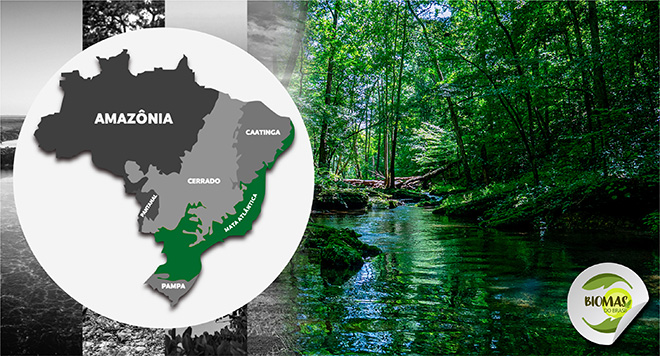
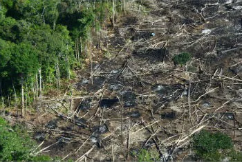
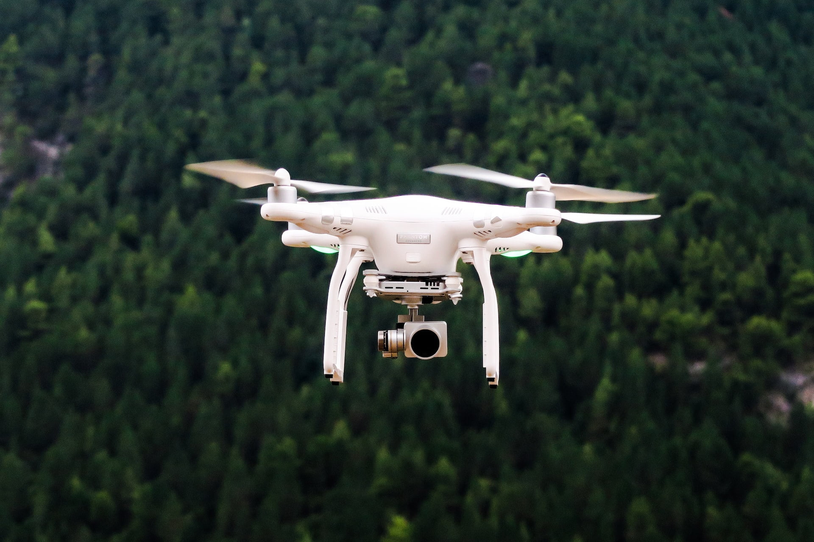

Introdução
A Mata Atlântica é um dos biomas mais ricos do Brasil, com grande biodiversidade e importância ecológica. Ela cobre uma área de 15 estados brasileiros e se estende desde o Rio Grande do Norte até o Rio Grande do Sul. Esse bioma é fundamental para o equilíbrio ambiental do país, oferecendo recursos essenciais como água doce, oxigênio, alimentos e medicamentos. No entanto, ao longo dos séculos, a Mata Atlântica foi severamente degradada, com grande parte de sua área original desaparecendo devido ao avanço da urbanização, da agricultura e da exploração madeireira. Hoje, restam apenas cerca de 12% de sua cobertura original, o que coloca em risco muitas espécies de flora e fauna que dependem desse ecossistema para sua sobrevivência.
Problema
A caça ilegal e a pesca predatória são problemas graves que afetam a biodiversidade da Mata Atlântica, um dos biomas mais ricos e ameaçados do Brasil. Essas atividades comprometem tanto a fauna local quanto as comunidades que dependem dos recursos naturais para sua sobrevivência.
1. Caça Ilegal
A caça ilegal é uma das maiores ameaças à vida selvagem da Mata Atlântica. Animais como o mico-leão-dourado e a onça-pintada, que são essenciais para o equilíbrio ecológico, são vítimas de caça. Eles desempenham papéis importantes, como polinização, controle de pragas e manutenção dos ecossistemas. A caça também está ligada ao tráfico de animais silvestres, que coloca diversas espécies em risco de extinção, afetando diretamente a biodiversidade da região.
2. Pesca Predatória
A pesca predatória é outro problema sério, principalmente nas áreas litorâneas e nos ecossistemas marinhos da Mata Atlântica, como manguezais e recifes de corais. A pesca ilegal, com o uso de redes de arrasto e outras técnicas destrutivas, prejudica a vida marinha e compromete a pesca sustentável, afetando as comunidades que dependem dessa atividade. Espécies como tubarões e peixes-boi-marinho estão em risco de extinção devido à captura indiscriminada, e a destruição dos habitats marinhos afeta todo o ecossistema marinho.
Solução

A solução inovadora envolve o uso de drones equipados com câmeras de 360° e sensores para monitorar áreas de risco de caça ilegal e pesca predatória na Mata Atlântica.
Esses drones poderiam ser operados por postos policias locais treinadas, permitindo uma vigilância mais constante e eficaz das regiões mais difíceis de alcançar.
também seria intalado cameras com sensores de presença,que ao ativado,notifica as autoridades para monitorar
Benefícios da Solução
- Vigilância Acessível: Drones permitem monitorar grandes áreas de difícil acesso, proporcionando uma vigilância mais eficaz com um custo relativamente baixo. e as cameras ajudam a monitorar espaços onde o drone não consegue ir
- Detecção em Tempo Real: A tecnologia permite identificar atividades ilegais de forma quase imediata, aumentando as chances de ações rápidas e eficazes.
- Redução de Custos: Em vez de enviar patrulhas constantes, os drones podem cobrir mais áreas com menos recursos, tornando o processo mais econômico.
Implementação
Para implementar essa solução, seria necessário o financiamento de ONGS, governo e empresas , e parcerias com empresas de tecnologia que possam fornecer os drones ,treinamentos e câmeras. Além disso, seria importante criar um programa de monitoramento onde as imagens capturadas pelos drones e câmeras possam ser acessadas pelas autoridades, garantindo melhor vigilância.